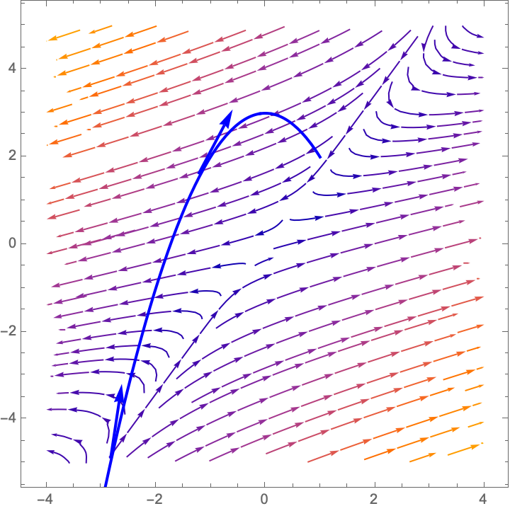
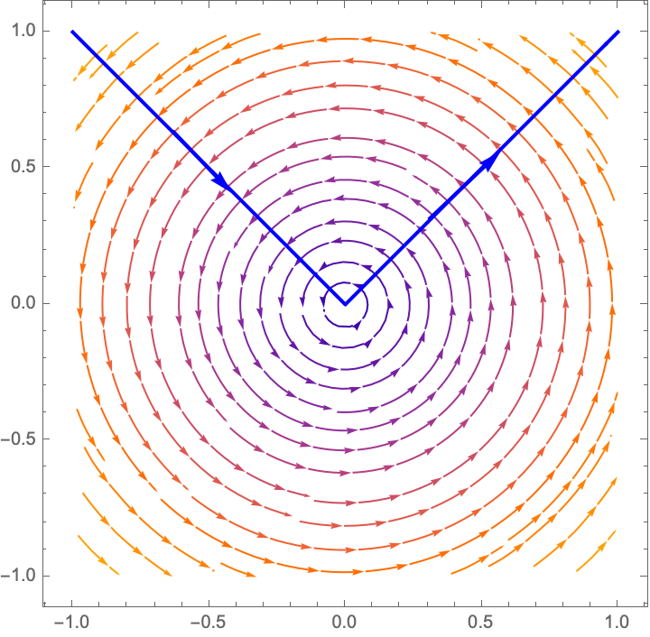

Ejercicio
Las siguientes gráficas muestran un campo vectorial y una curva orientada. Trata de evaluar si la integral de línea sobre la curva es positiva, negativa o cero.
-

-

-

-

La integral de línea trata integra campos vectoriales sobre curvas orientadas. La idea es que la integral promedia la acción del campo vectorial sobre la curva.
La integral de línea puede ser positiva, si la curva se mueve en la misma dirección general que el campo, negativa si se mueve en dirección contraria o cero, si se mueve perpendicularmente.
Ya que el producto punto mide la dirección entre dos vectores la integral de línea se define \[ \int_a^b \mathbb{F}(\alpha(t))\cdot \alpha'(t)dt \] donde \(\alpha\) es la curva y \(\mathbb{F}\) el campo.
La definición anterior tiene la ventaja de que es compatible con la nocaicón de trabajo. Si una fuerza constante \(\mathbb{F}\) mueve un objeto una distancia \(d\) el trabajo es \(\mathbb{F} d\). Si el objeto se mueve a lo largo de una curva y la fuerza no es constante podemos dividir la trayectoria en pequeños trozos y en cada trozo el trabajo es \[ W_i\approx \mathbb{F}(\alpha(t_i^*))\cdot (\alpha(t_i)-\alpha(t_{i-1})) \] donde \(t_i^*\in [t_{i-1},t_i]\) es un punto que aproxima la fuerza en dicho segmento.
Usando el Teorema del valor medio para curvas podemos estimar \[ W_i\approx \mathbb{F}(\alpha(t_i^*))\cdot \alpha'(c_i)(t_i-t_{i-1}) \] al sumar y tomar límite podemos definir el trabajo realizado por \(\mathbb{F}\) al mover una partícula a lo largo de \(\alpha\) como \[ W=\lim_{n\to \infty} \sum_{i=1}^n \mathbb{F}(\alpha(t_i^*))\cdot \alpha'(c_i)(t_i-t_{i-1})=\int_a^b \mathbb{F}(\alpha(t))\cdot \alpha'(t)dt \]
Un campo de fuerza en el plano está dado por \(\mathbb{F}(x,y)=(x^2-y^2,xy)\).
Fija dos números positivos \(a,b\) y por \(\alpha\) denota la trayectoria formada por el rectángulo con vértices \((0,0),(a,0),(a,b),(0,b)\), recorrida en ese orden, una sóla vez.
Una partícula se mueve sobre el paraboloide \(z=1-x^2-2y^2\) bajo la acción del campo \(\mathbb{F}(x,y,z)=(\sqrt{2}y,3\sqrt{2}x,1/2)\). Si además nos restringimos que se mueva del plano \(z=0\) a \(z=1\) sobre planos de la forma \(y=mx\), encuantra la trayectoria para la cual el trabajo es máximo.
Sean \(\alpha:[a,b]\to \mathbb{R}^n, \beta:[c,d]\to \mathbb{R}^n\) dos curvas suaves equivalentes y supongamos que \(u:[a,b]\to [c,d]\) implementa la equivalencia. Se dice que tienen:
Dada una curva suave \(\alpha:[a,b]\to \mathbb{R}^n\) podemos darle dos orientaciones: positiva es cuando \(\alpha(a)\) es el punto inicial y \(\alpha(b)\) el punto final y negativa, cuando \(\alpha(b)\) es el punto inicial y \(\alpha(a)\) el punto final.
Sea \(U \subseteq \mathbb{R}^n\) y \(\mathbb{F}:U\to \mathbb{R}^n \) un campo vectorial continuo, con funciones coordenadas \(\mathbb{F}=(F_1,\dots, F_n)\).
Supongamos que tenemos \(\alpha:[a,b]\to \mathbb{R}^n\) es una curva orientada suave cuya traza está contenida en \(U\).
Definimos la integral de \(\mathbb{F}\) a lo largo de \(\alpha\) como \[ \int_a^b \mathbb{F}(\alpha(t))\cdot \alpha'(t)dt \]
Ya que la integral de línea involucra un producto punto se usa la notación \[ \int_{\alpha}\mathbb{F}\cdot d\alpha : =\int_{a}^b \mathbb{F}(\alpha(t))\cdot \alpha'(t)dt \]
La definición anterior se puede extender para curvas suaves a trozos.
Si \(\beta:[a,b] \to \mathbb{R}\) es una trayectoria parametrizada suave a trozos y \( \{a=t_0< \cdots < t_n=b \}\) es una partición de \([a,b]\) tal que \(\beta\) restringida a \([t_{j-1}, t_{j}]\) es suave, definimos \[ \int_\beta \mathbb{F}d\beta = \sum_{j=1}^n \int_{\beta_j} \mathbb{F}d\beta_j \] donde \(\beta_j\) es simplemente la restricción de \(\beta\) al intervalo \([t_{j-1},t_j]\).
Usando la propiedad de la integral que dice \[ \int_a^b f(x)dx=\int_a^cf(x)dx+\int_c^bf(x)dx \] donde \(f\) es una función integrable en \([a,b]\) y \(c\in [a,b]\) es un punto cualquiera, se obtiene que ésta definición no depende de la partición de \([a,b]\) que se tome.
Si escribimos las funciones coordenadas de \(\mathbb{F}=(F_1,\dots, F_n)\) y las de \(\alpha(t)=(a_1(t),\dots, a_n(t))\) la integral de línea se calcua como \[ \int_a^b \mathbb{F}(\alpha(t))\cdot \alpha'(t)dt = \sum_{i=1}^n \int_{a}^b F_i(\alpha(t))a_i'(t)dt \]
También se usa la notación \[ \int_\alpha F_1dx_1+\cdots F_ndx_n \] pues cada sumando \(F_idx_i\) se entiende como \(F(a_i(t))a_i'(t)\), en la expresión de arriba.
Así por ejemplo la integrales \[ \int_{\alpha} xdx-2ydy, \, \int_\alpha -2ydx+xdy \] son las integrales sobre \(\alpha\) de los campos \(\mathbf{F}(x,y)=(x,-2y)\), \(\mathbf{G}(x,y)=(-2y,x)\), respectivamente.
Este ejercicio prueba que la integral de línea no depende de la parametrización de la curva y que el signo depende de la orientación.
Sea \(\mathbb{A}\) un campo diferenciable en el abierto \(U\) y supon que \( \alpha:[a,b]\to \mathbb{R}^n, \beta:[c,d]\to \mathbb{R}^n\), son dos trayectorias parametrizadas suaves con la misma traza contenida en \(U\) y que son equivalentes.
Demuestra que si \(\alpha\) y \(\beta\) tienen la misma orientación entonces \[ \int_\alpha \mathbb{A} \cdot d\alpha = \int_\beta \mathbb{A}\cdot d\beta \] y que si tienen orientaciones distintas entonces \[ \int_\alpha \mathbb{A} \cdot d\alpha = -\int_\beta \mathbb{A}\cdot d\beta \]
No podemos dejar de enfatizar la importancia del Lema anterior . El lema no está diciendo que la integral de línea es una medida que es intrínseca de la curva y que la orientación de la misma juega un papel muy importante. Es decir, si dos personas dan parametrizaciones distintas de la curva, que preserven la orientación, la integral de línea es la misma. Si las parametrizaciones tienen sentidos opuestos, las integrales difieren por un signo. En resumen:
Sea \(\mathbb{F}=(F_1,\dots, F_n)\) un campo vectorial constante y sea \(\alpha:[a,b]\to \mathbb{R}^n\) una trayectoria parametrizada suave a trozos.
Por \(\alpha\) denotamos la circunferencia de radio \(r\) centrada en el origen, recorrida una vez en el sentido contrario a las menecillas del reloj (sentido positivo). Demuestra que \[ \int_\alpha A_1dx+A_2dy = r\left(\int_0^{2\pi}A_2(\alpha(t))\cos(t)-A_1(\alpha)\sen(t)dt \right)\] Concluye que, si \(A_1\) y \(A_2\) son funciones constantes, entonces \(\int_\alpha A_1dx+A_2dy=0\).
Para \(n\) un entero considera la curva \(\alpha_n(t)=(r\cos(nt), r\sen(nt))\) con \(t\in [0,2\pi]\) y \(r>0\) es un número fijo. Prueba que \[ \int_{\alpha_n} -\frac{y}{x^2+y^2} dx+ \frac{x}{x^2+y^2}dy = 2\pi n \] En particular, esto prueba que si \(n\ne m\) entonces las curvas \(\alpha_n\) y \(\alpha_m \) NO son equivalente (pues si lo fueran, por el Lema 5.9 tendrían la misma integral de línea).
Notar que, a pesar de que las \(\alpha_n\)'s tienen todas la misma traza (una circunferencia de radio \(r\) centrada en el origen) las integrales de línea sobre las \(\alpha_n\)'s son distintas. Lo anterior se debe a la manera en que cada una recorre la circunferencia, pues pude pensarse que que \(\alpha_n\) recorre la circunferencia n veces así que la \(n\) sí importa para la integral de línea.
Sea \(\alpha\) la curva intersección de las superficies \(x^2+y^2+z^2=2(x+y)\) y \(x+y=a\), con \(0\leq a \leq 2\), recorrida en el sentido contrario a las manecillas del reloj, vista desde el origen.
Encuentra el \(a\in [0,2]\) para la cual \[ \int_\alpha ydx+zdy+xdz \] es máxima.
Calcula las integrales de línea.
Las siguientes gráficas muestran un campo vectorial y una curva orientada. Trata de evaluar si la integral de línea sobre la curva es positiva, negativa o cero.
Sea \(\alpha:[a,b]\to \mathbb{R}^n\) una curva suave. Prueba que \[ \int_\alpha \alpha \cdot d\alpha =\frac{1}{2}\left( \|\alpha(b)\|^2-\|\alpha(a)\||^2\right) \]
Este ejercicio prueba que la integral de línea recupera la integral con respecto a longitud de arco.
Sea \(\alpha:[a,b]\to \mathbb{R}^n\) una curva suave cuyo vector tangente no se anula y \(f:D\to \mathbb{R}\) una función escalar y supongamos que \(D\) contiene la traza de \(\alpha\).
Definimos el campo vectorial sobre la traza de \(\alpha\) como \(\mathbb{F}(\alpha(t))=f(\alpha(t))\frac{1}{\|\alpha'(t)\|}\alpha'(t)\).
Prueba que \[ \int_{\alpha}\mathbb{F}\cdot d\alpha = \int_{\alpha}f |d\alpha| \]
Sea \(\mathbb{F}:U\to \mathbb{R}^n\) un campo vectorial y \(\alpha:[a,b]\to \mathbb{R}^n\) una curva suave con traza contenida en \(U\).
La trayectoria de una partícula de masa \(m\) en el tiempo está descrita por una trayectoria \(\alpha(t)\), bajo la acción de un campo de fuerza \(\mathbb{F}\). Si la rapidez de la partícula es \(v(t)\), su velocidad cinética está dada por \(\frac{1}{2}mv^2(t)\).
Prueba que el cambio en la energía cinética en un intervalo dado es igual al trabajo realizado por la fuerza.
Si la partícula se mueve del tiempo \(t=t_1\) a \(t=t_2\) el trabajo realizado es \[ \int_{t_1}^{t_2} \mathbb{F}(\alpha(t))\cdot \alpha'(t)dt \] Debemos de probar \[ \int_{t_1}^{t_2} \mathbb{F}(\alpha(t))\cdot \alpha'(t)dt =\frac{1}{2}mv^2(t_2)-\frac{1}{2}mv^2(t_1) \] donde \(v(t)=\|\alpha'(t)\|\).
Por la segunda ley del movimiento de Newton \begin{eqnarray*} F(\alpha(t))&=&m\alpha''(t) \\ \Rightarrow \mathbb{F}(\alpha(t))\cdot \alpha'(t)&=&m\alpha''(t)\cdot \alpha'(t) \end{eqnarray*} pero se cumple la identidad \[ \frac{d}{dt}(\alpha'(t)\cdot \alpha'(t))=2 \alpha'(t)\cdot \alpha''(t) \] por lo que podemos escribir \begin{eqnarray*} \mathbb{F}(\alpha(t))\cdot \alpha'(t)&=&\frac{1}{2}m \frac{d}{dt}(\alpha'(t)\cdot \alpha'(t)) \\ &=& \frac{1}{2}\frac{d}{dt}\|\alpha'(t)\|^2\\ &=&\frac{1}{2}m \frac{d}{dt}v^2(t) \end{eqnarray*} por lo que \begin{eqnarray*} \int_{t_1}^{t_2} \mathbb{F}(\alpha(t))\cdot \alpha'(t)dt &=&\int_{t_1}^{t_2} \frac{1}{2}m\frac{d}{dt}v^2(t) dt \\ &=& \frac{1}{2}mv^2(t_2)-\frac{1}{2}mv^2(t_1) \end{eqnarray*}
Un campo de fuerza está dado por \(\mathbb{F}=(y,zx,xy-x^2z)\). Calcula el trabajo realizado al mover una partícula desde el origen al punto \((1,5,2)\), a lo largo de una linea recta (en esa dirección).
Considera un campo de fuerza en el plano de la forma \(\mathbb{F}(x,y)=(f_1(x,y),xy)\), donde \(f_1\) es una función continua en \(\mathbb{R}^2\).
Prueba que el trabajo realizado por \(\mathbb{F}\) para mover una partícula a lo largo del eje \(y\) siempre es cero.
Cosidera el campo de fuerza \(\mathbb{F}(x,y)=(3x-3y,xy)\). Este campo actua sobre una partícula que debe de moverse desde el origen hasta la recta \(x=1\) a lo largo de una línea recta de la forma \(y=ax\), con \(a\geq 0\).
Encuentra los valores de \(a\) para los cuales el trabajo realizado por la fuerza sobre la partícula sea cero.
Un campo de fuerza en \(\mathbb{R}^3\) está dado por \(\mathbb{F}(x,y,z)=(z-x,2z-y,x-y)\). Considera la curva \(\alpha\) que se obtiene al intersectar la esfera \(x^2+y^2+z^2=9\) con el plano \(z=ay\) donde \(0< a \). La curva \(\alpha\) se recorre una sóla vez en el sentido positivo cuando se ve desde desde arriba del plano \(xy\). Calcula el trabajo realizado por la fuarza al mover la partícula.
Empecemos por parametrizar la curva que se obtiene al intersectar la esfera \(x^{2} + y^{2} + z^{2} = 9\) con el plano \(z = ay\) donde \(0 < a\). Entonces sustituyendo \(z = ay\) en la ecuación \(x^{2} + y^{2} + z^{2} = 9\) obtenemos \(x^{2} + y^{2} + a^{2}y^{2} = 9\), simplificando llegamos a \(x^{2} + c^{2}y^{2} = 9\) donde \(c^{2} = 1 + a^2\) que representa la ecuación de una elipse.
Una parametrización de esta elipse es \(x(t) = 3\cos (t) \) y \( y(t) = \frac{3\sen (t)}{c}\) donde \(t \in [0, 2\pi]\). Es claro que \(y(t)\) esta bien definida, ya que \(c > 0\). Además cabe mencionar que esta parametrización de la elipse la recorre en sentido contrario a las manecillas del reloj. Como \(z = ay\) se sigue que \(z(t) = \frac{3a\sen (t)}{c}\).
Sea \(\alpha : [0, 2\pi] \subseteq \mathbb{R} \rightarrow \mathbb{R}^{3}\) definida como \[ \alpha (t) = (x(t), y(t), z(t)) = \left(3\cos(t), \frac{3\sen (t)}{c}, \frac{3a\sen (t)}{c}\right) \] Por lo tanto \(\alpha\) es una parametrización de la curva que se obtiene al intersectar la esfera \(x^{2} + y^{2} + z^{2} = 9\) con el plano \(z = ay\).
Ahora procedemos a calcular \(\alpha^{\prime}(t)\). Basta calcular \(x^{\prime}(t), y^{\prime}(t) \text{ y } z^{\prime}(t)\). Entonces tenemos que \(x^{\prime}(t) = -3\sen(t), y^{\prime}(t) = \frac{3\cos(t)}{c} \text{ y } z^{\prime}(t) = \frac{3a\cos(t)}{c}\).
Por lo tanto, \begin{eqnarray*} \int_{\alpha}\mathbb{F}\cdot d\alpha & = & \int_{0}^{2\pi} \Bigg[\left(\frac{3a\sen(t)}{c} -3\cos(t)\right)(-3\sen(t))\\ & + & \left(\frac{2\cdot 3a\sen(t)}{c} -\frac{3\sen(t)}{c}\right)\left(\frac{3\cos(t)}{c}\right) \\ & & + \left(3\cos(t) -\frac{3\sen(t)}{c}\right)\left(\frac{3a\cos(t)}{c}\right) \Bigg] dt \\ & = & \int_{0}^{2\pi} \Bigg[9\cos(t)\sen(t) -\frac{9a}{c}\sen^{2}(t) \\ & + & \frac{18a}{c^{2}}\sen(t)\cos(t) -\frac{9}{c^{2}}\sen(t)\cos(t) \\ & & + \frac{9a}{c}\cos^{2}(t) -\frac{9a}{c^{2}}\sen(t)\cos(t) \Bigg] dt \\ & = & \int_{0}^{2\pi} \Bigg[\left(9 + \frac{18a}{c^{2}} -\frac{9}{c^{2}} -\frac{9a}{c^{2}}\right)\sen(t)\cos(t) \\ & + & \frac{9a}{c}\left(\cos^{2}(t) -\sen^{2}(t)\right) \Bigg] dt \\ & = & \int_{0}^{2\pi} \Bigg[\left(9 + \frac{9a}{c^{2}} -\frac{9}{c^{2}} \right)\frac{\sen(2t)}{2} + \frac{9a}{c}\cos(2t) \Bigg] dt \\ & = & \frac{1}{2}\left(9 + \frac{9a}{c^{2}} -\frac{9}{c^{2}} \right)\int_{0}^{2\pi}\sen(2t) dt +\frac{9a}{c}\int_{0}^{2\pi}\cos(2t) dt \\ & = & 0 \end{eqnarray*} La última igualdad es consecuencia de que \[ \int_{0}^{2\pi}\cos(2t) dt = \int_{0}^{2\pi}\sen(2t) dt = 0 \]
Una observación es que a pesar de que \(\mathbb{F}\) no es un campo conservativo se tiene que \(\int_{\alpha}\mathbb{F}\cdot d\alpha = 0\).
Por lo tanto el trabajo realizado por la fuerza al mover la partícula es \(\int_{\alpha}\mathbb{F}\cdot d\alpha = 0\).
Dadas dos trayectorias suaves a trozos \(\alpha:[a,b]\to \mathbb{R}^n, \beta:[c,d]\to \mathbb{R}^n\) con la propiedad de que \(\alpha(b)=\beta(c)\) (una termina donde la otra empieza) definimos: \[ \alpha \vee \beta :[0,1] \to \mathbb{R}^n \] por \[ (\alpha \vee \beta )(t)=\left\{ \begin{array}{cc} \alpha((b-a)(2t)+a) & t\in [0,1/2] \\ \beta((d-c)(2t-1)+c) & t\in [1/2,1] \end{array} \right. \]
Nota que \(\alpha \vee \beta\) también es una curva suave a trozos.
Sean \(\mathbb{F},\mathbb{G}:U\to \mathbb{R}^n\) dos campos vectoriales continuos y \(\alpha:[a,b]\to \mathbb{R}^n\) una curva suave con traza en \(U\). Entonces \[ \int_\alpha (c\mathbb{F}+\mathbb{G})\cdot d\alpha= c\int_\alpha \mathbb{F}\cdot d\alpha +\int_\alpha \mathbb{G}\cdot d\alpha \]
Sea \(\mathbb{F}: U\to \mathbb{R}^n\) un campo vectorial continuo y \(\alpha:[a,b]\to U\) una curva suave a trozos. Entonces \[ \left| \int_{\alpha}\mathbb{F} \cdot d\alpha \right| \leq \int_{\alpha}\|F\| |d\alpha| \]
En particular, si existe una \(M>0\) tal que \(\| \mathbb{F}(x,y,z)\| \leq M\) para todo \((x,y,z)\) en la traza de \(\alpha\) entonces \[ \left| \int_{\alpha}\mathbb{F} \cdot d\alpha \right| \leq M \textrm{Longitud}(\alpha) \]
Sea \(\mathbb{F}:U\to \mathbb{R}^n\) un campo continuo y \(\alpha, \beta\) dos curvas orientadas suaves a trozos con trazas contenidas en \(U\). Si el punto final de \(\alpha\) conincide con el punto final de \(\beta\) prueba que \[ \int_{\alpha \vee \beta }\mathbb{F} \cdot d(\alpha \vee \beta)=\int_\alpha \mathbb{F}\cdot d\alpha +\int_\beta \mathbb{F}\cdot d\beta \]